Grade 10
627 no-prep resources for grade 10 with answer keys: reading comprehension passages, reading trails, and math centers.
627 resources
Subject
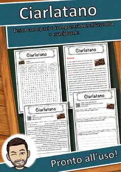
Ciarlatano – Italian Reading: Cloze Text, Listening Task & Word Search (Scheda)
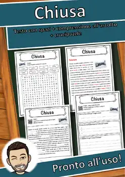
Chiusa – Italian Reading: Cloze Text, Listening Task & Word Search (Scheda)
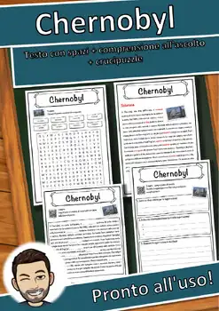
Chernobyl – Italian Reading: Cloze Text, Listening Task & Word Search (Scheda)
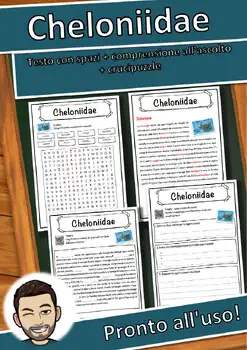
Cheloniidae – Italian Reading: Cloze Text, Listening Task & Word Search (Scheda)
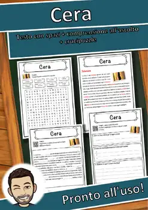
Cera – Italian Reading: Cloze Text, Listening Task & Word Search (Scheda)
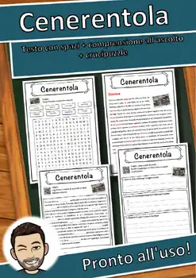
Cenerentola – Italian Reading: Cloze Text, Listening Task & Word Search (Scheda)
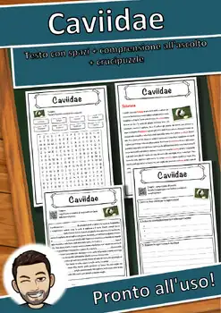
Caviidae – Italian Reading: Cloze Text, Listening Task & Word Search (Scheda)
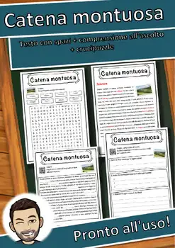
Catena montuosa – Italian Reading: Cloze, Listening & Word Search
Carovana – Italian Reading: Cloze Text, Listening Task & Word Search (Scheda)
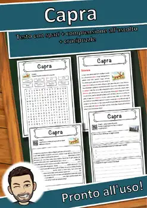
Capra – Italian Reading: Cloze Text, Listening Task & Word Search (Scheda)
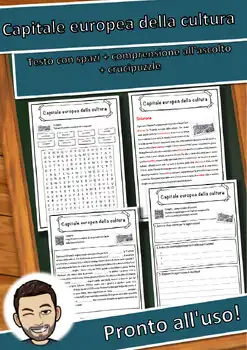
Capitale europea della cultura – Italian Reading: Cloze, Listening & Word Search
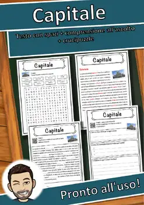
Capitale – Italian Reading: Cloze Text, Listening Task & Word Search (Scheda)
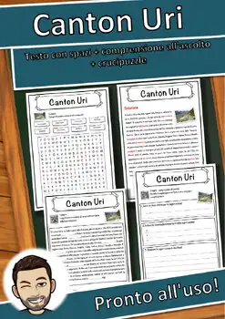
Canton Uri – Italian Reading: Cloze Text, Listening Task & Word Search (Scheda)

Calendario – Italian Reading: Cloze Text, Listening Task & Word Search (Scheda)
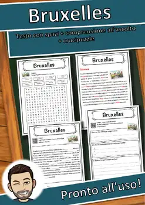
Bruxelles – Italian Reading: Cloze Text, Listening Task & Word Search (Scheda)
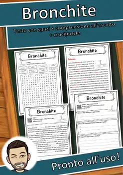
Bronchite – Italian Reading: Cloze Text, Listening Task & Word Search (Scheda)
Branchia – Italian Reading: Cloze Text, Listening Task & Word Search (Scheda)
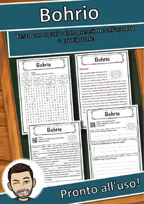
Bohrio – Italian Reading: Cloze Text, Listening Task & Word Search (Scheda)
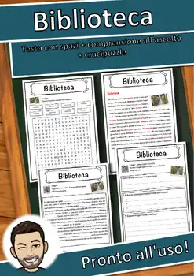
Biblioteca – Italian Reading: Cloze Text, Listening Task & Word Search (Scheda)
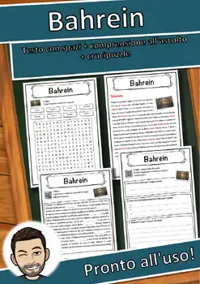
Bahrein – Italian Reading: Cloze Text, Listening Task & Word Search (Scheda)
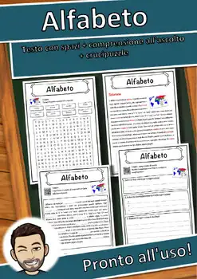
Alfabeto – Italian Reading: Cloze Text, Listening Task & Word Search (Scheda)
Bivalvia – Italian Reading: Cloze Text, Listening Task & Word Search (Scheda)
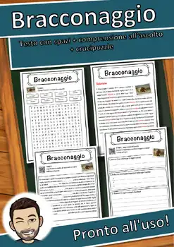
Bracconaggio – Italian Reading: Cloze, Listening & Word Search
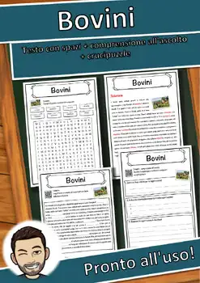
Bovini – Italian Reading: Cloze Text, Listening Task & Word Search (Scheda)
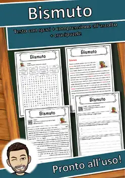
Bismuto – Italian Reading: Cloze Text, Listening Task & Word Search (Scheda)
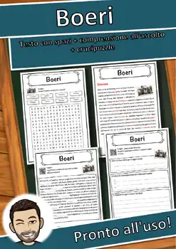
Boeri – Italian Reading: Cloze Text, Listening Task & Word Search (Scheda)
Bile – Italian Reading: Cloze Text, Listening Task & Word Search (Scheda)
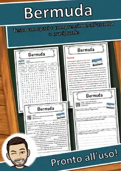
Bermuda – Italian Reading: Cloze Text, Listening Task & Word Search (Scheda)
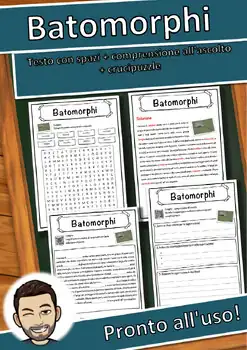
Batomorphi – Italian Reading: Cloze Text, Listening Task & Word Search (Scheda)
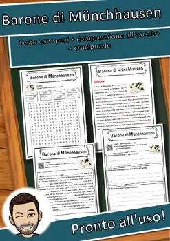
Barone di Münchhausen – Italian Reading: Cloze, Listening & Word Search
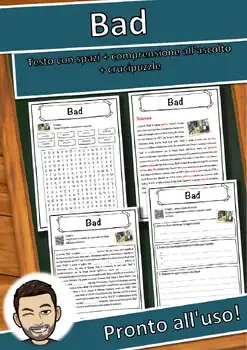
Bad – Italian Reading: Cloze Text, Listening Task & Word Search (Scheda)
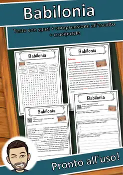
Babilonia – Italian Reading: Cloze Text, Listening Task & Word Search (Scheda)

Attrezzo – Italian Reading: Cloze Text, Listening Task & Word Search (Scheda)

Attore – Italian Reading: Cloze Text, Listening Task & Word Search (Scheda)

Asse terrestre – Italian Reading: Cloze, Listening & Word Search
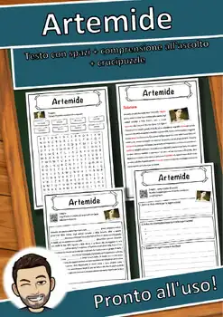
Artemide – Italian Reading: Cloze Text, Listening Task & Word Search (Scheda)
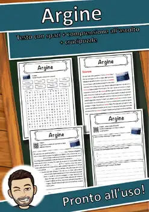
Argine – Italian Reading: Cloze Text, Listening Task & Word Search (Scheda)

Argento – Italian Reading: Cloze Text, Listening Task & Word Search (Scheda)

Architettura – Italian Reading: Cloze, Listening & Word Search

Apprendimento – Italian Reading: Cloze, Listening & Word Search

Apostolo – Italian Reading: Cloze Text, Listening Task & Word Search (Scheda)
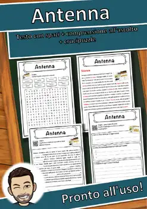
Antenna – Italian Reading: Cloze Text, Listening Task & Word Search (Scheda)

Anno – Italian Reading: Cloze Text, Listening Task & Word Search (Scheda)

Anima – Italian Reading: Cloze Text, Listening Task & Word Search (Scheda)

Anatinae – Italian Reading: Cloze Text, Listening Task & Word Search (Scheda)

Amicizia – Italian Reading: Cloze Text, Listening Task & Word Search (Scheda)
Alta Austria – Italian Reading: Cloze, Listening & Word Search
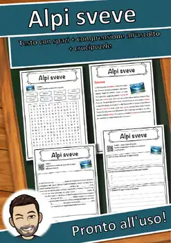
Alpi sveve – Italian Reading: Cloze Text, Listening Task & Word Search (Scheda)
No resources found – try a different search term or filter.